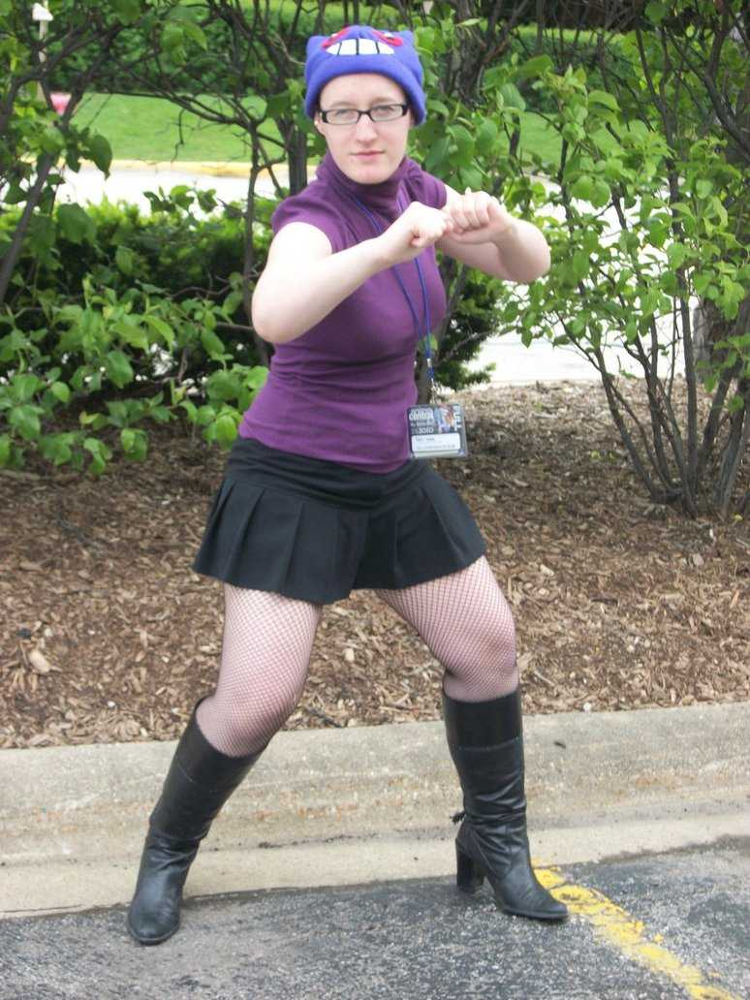
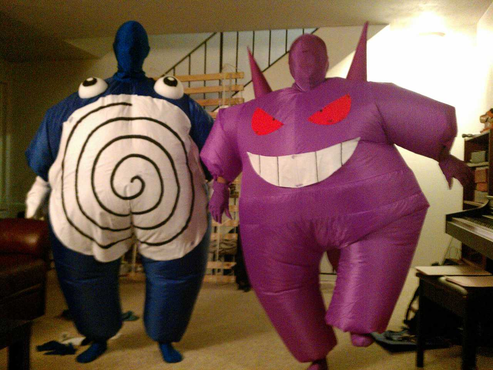
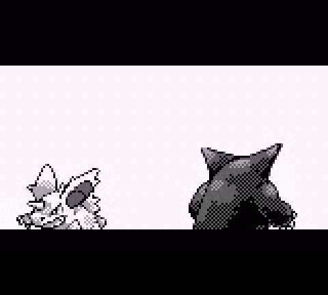

De: La Frikipedia, la enciclopedia extremadamente seria.
De: La Frikipedia, la enciclopedia extremadamente seria. De: La Frikipedia, la enciclopedia extremadamente seria.
| De la serie bichos dentro de bolas: | |
| Gengar | |
|---|---|
| Nombre | Gengar |
| Especie | Diabolicus muertus clefairus |
| Apariencia | Es un fantasma medio-negro y parece fumado |
| Hábitat natural | Detrás tuya, debajo de tu cama, en los estancos ,etc... |
| Localización | Según los videojuegos, desconocida. |
| Tipo | |
| Habilidad | Levitación (de tanto fumar se le sale el humo por el culo). |
| Pokemonización | Clefable fallecido que ha fumado 1.817 porros. |
| Número | 000000000094 |
«¡AAAAAAAAAAAAAAAAAAAAAAAAHHHHH!»
~ Tú después de tener un orgasmo viendo a Gengar.
«¡ZOMBIES! ¡ZOMBIES!»
~ Médiums y sus comúnes conversaciones sobre Gengar.
Es el Archi-Antepasado-Haceunrato-Enemigo de Nidorino, según dicen, el color rojo de sus ojos viene de hacerse tantas pajas y fumar un gran porro, le encanta ir a los estancos por las noches y robar todo el tabaco y la marihuana que puede llevar en sus fantasmales manos.
 mamá de gengar
como ya saben gengar es el comunistas mutantes del espacio de 1938, 5 horas después de la guerra mortal de los wombat contra los vampiros emos y zombies frikis del amazonas más bien conocido como clase de matemáticas  gengar y poliwhirl cuando no están los padres en casa
gengar es hermano de los fantasmas del pacman y aparecía en el beta del juego pero después lo echaron a patadas en el culo porque salía con la señora pacman y pinky. Luego encontró trabajo en pokémon y lo obligaron a clonarse y a meterse en bolas (no piensen mal) y a obedecer a un montón de retrasados que para no quedar como maricas,envían a luchar por ellos a cucarachas que explotan y tiran burbujas
Vete al pasillo de tu luz apagada,ponte frente a un espejo y dí 5 veces "nunca he fumado", entonces aparecerá Gengar y te meterá 30 puros en el culo y en la boca, entonces le lanzas a tu suegra que suele estar poseída por gengar a esa hora,una Ocaso Ball o una Pocho Ball que es mas eficaz, y ya lo has capturado. NOTA:Solo hay un 0,001% de que esto suceda.
Dirígete a una cueva/mansión, ya que alguna ha de haber por alguna razón. Camina en círculos como un loco en la entrada de la cueva y no uses más de 438 pasos, ya que los Gastly de Nv30 o por ahí, es más, tu Haunter,luego intercambialo a un amigo (si es que tienes) o a cualquier sujeto por la calle con cara de friki y obligalo inmediatamente a que te lo devuelva o le borraras la partida, así tendrás a un Gengar fresco para matar.
Es mucho más practico en este juego, lo que deberás hacer es lo siguiente:
Este forma parte de un "Glitch" sea lo que sea, y ademas, es mucho más épico. Lo siguiente es:
NOTA:Solo aparecerá un Gengar, uno al Nv80. Ademas sí te das cuenta,todos los pasos que realizaste son en zigzag.
Vete a las 4 de la mañana al castillo de ciudad chueco al lado de pueblo huevo y da 500 pasos en la habitación 90 del piso 20 y guarda la partida y apagas cuando dice:
Luego la prendes (a menos que puedas jugar con tu gayboy apagada) y das otros 10 pasos y apreta Z, te aparecerá un menú lo cierras y te aparecerá Gengar al nivel -3 y lo puedes atrapar con una pedo ball o weegee ball (con la última aprenderá dominación) ¡OJO! Sí apretaste D en vez de Z, te saldrá un cuadro de texto que dice
Y te saldrá el hermano de Inky (tipo fantasma) de nivel 100 que sabe pelotudes y un shiny de nivel 400 que sabe debilidad mental y no serán fáciles de derrotar por que aunque el entrenador tenga cara de boludo
Aparece siempre en la cueva hormiguero sí tenés a bob esponja en el equipo  nidorino en celo queriendo follarse a gengar
Aunque es más facil hacer que tu hamster baile el bosque oscuro encima de noche tratando de hacerse el superman entrenando en un bosque lleno de fantasmas violadores drogadictos con olor a pedo , ademas el hijo de puta de gengar es ilucionista y te deja en bolas en el pizarrón de la universidad así que hay que tomar varias precauciones
*no correr por el cementerio a la noche ya que ahí esta enminado de gengar y además hay que ser boludo para eso
*no jugar al tetris en noche de luna llena ya que eso vendría a invocar a cientos de gengars que esperan por carne fresca
*tener un dispositivo cazafantasmas en un pokémontambién sirve el repelente de fantasmas o tener a pacman en el equipo
| | ||
|
Entrenadores
Pokémon
|
Autor(es):
![[1]](http://images.wikia.com/es.pokemon/images/f/f8/Gengar.png){kind=link}